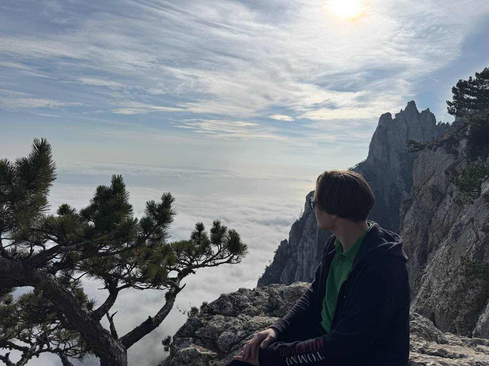

Участники проекта
Автор

Чулков Александр Романович
Группа: 251-331
Код направления: 09.03.02
Профиль: Программное обеспечение игровой компьютерной индустрии
Вклад в проект
В рамках проектной практики мной были выполнены работы по подготовке документации основного проекта и реализации индивидуальной практической части.
- Подготовлена документация основного проекта.
- Создан и оформлен репозиторий проекта на GitHub.
- Освоена базовая работа с Git и GitHub.
- Исследована разработка игры Space Invaders на C++.
- Разработана собственная практическая реализация игры.
- Подготовлена техническая Markdown-документация.
- Созданы схемы архитектуры и игровой логики.
- Подготовлены скриншоты работы программы.
- Создан статический сайт с материалами практики.
Используемые технологии
C++
Основной язык программирования практической части.
raylib
Библиотека для создания графики, окна и обработки ввода.
CMake
Система сборки проекта Space Invaders.
Git и GitHub
Контроль версий и хранение материалов проекта.
HTML и CSS
Использованы для создания статического сайта практики.
Markdown
Использован для технической документации проекта.
Роль в проекте
Работа над проектом выполнялась индивидуально. В рамках практики самостоятельно выполнялись исследование, разработка, тестирование, документирование и оформление результатов.